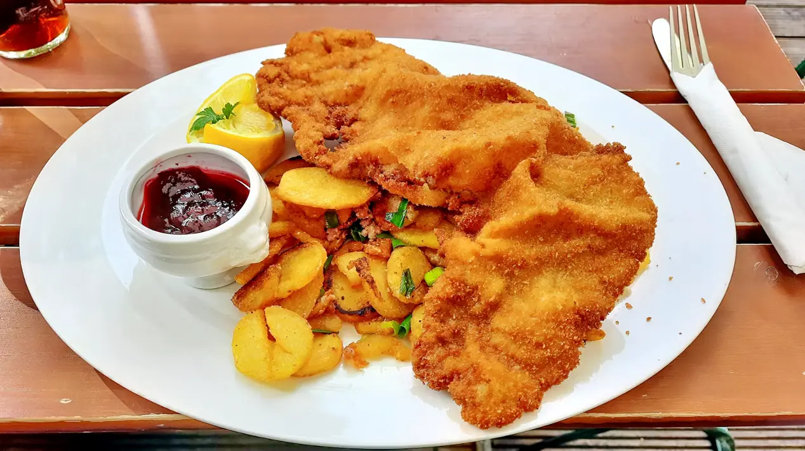
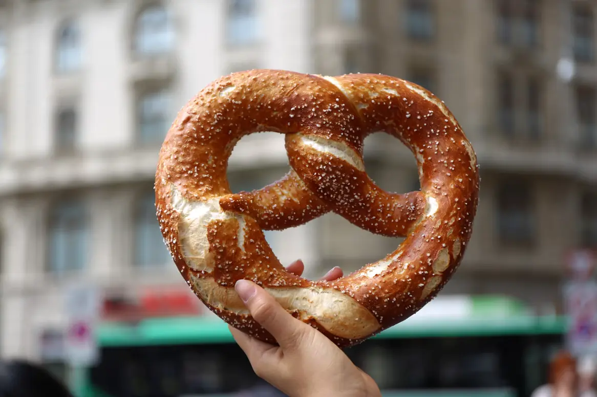
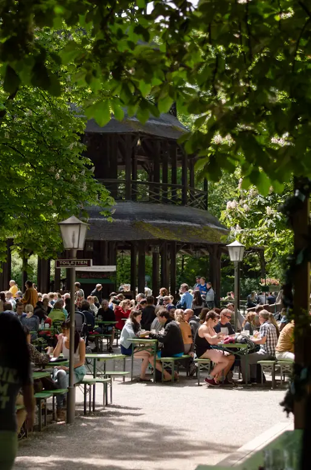

Schweineschnitzel
Pork cutlet pounded thin, fried in butter, lemon, lingonberry, parsley potatoes.
A Bavarian beer hall and covered biergarten in the Grand Central District. Twelve German taps, schnitzel pounded to order and pretzels out of the oven every hour.
Kitchen and biergarten open daily from 4 PM


Haus Linde is the beer hall we missed after moving from Bavaria: big shared tables, beer in proper glasses, and food that takes its time. Sit with your friends, or sit with strangers and leave as friends. That's the whole idea.

Pork cutlet pounded thin, fried in butter, lemon, lingonberry, parsley potatoes.

Two coarse pork bratwurst off the grill, sauerkraut, mashed potatoes, mustard.

A pretzel the size of your head, Obatzda cheese spread, sweet and spicy mustards.

Slow-roasted pork shank with crackling, dark beer gravy, bread dumpling, kraut.

Our garden sits under a timber roof and three big shade sails, with fans for August and heaters for the four cold nights a year. Bring the dog, bring the kids, bring the whole office.
Imported from small family breweries in Bavaria and Franconia, kept cold and poured slowly with a proper head. Every beer comes in three sizes.
0.3L0.5L1L Mass
Full beer listPrices for a 0.5L pour
Mittwoch
The regulars' table from 6 PM. $6 half liters of Helles and German conversation for every level.
Freitag
A wooden keg tapped by hand at 6 PM sharp. Free pours until it runs dry.
Samstag
Franz Moser plays the garden from 6 to 9 PM. Sing-alongs strongly encouraged.
Sonntag
Weisswurst, pretzel and a Hefeweizen for $18, 11 AM to 2 PM.

Josef and Annelie Brandl ran a Gasthaus outside Rosenheim for twenty years before a winter vacation on the Gulf changed their plans. Haus Linde opened on Central Ave in 2021 with Oma Resi's recipe book and a lot of Florida sunshine.
Read our story"We cook the way my mother cooked. Slowly, with butter, and enough for seconds."
Josef Brandl, chef and co-owner
Mon to Thu 4 to 10 PM · Fri 11:30 AM to 11 PM · Sat 11 AM to 11 PM · Sun 11 AM to 9 PM